A shared unknown is not a reusable scheme
In a monomorphic system, a variable bound to a function has one shared type throughout its scope. If the first use forces the input type to int, a later use cannot independently choose bool. Let-polymorphism replaces suitable free type variables with universally quantified variables in a type scheme.
For the identity function, the scheme is ∀α. α → α. Each use receives fresh unknowns while preserving the relationship between input and output within that use.
let identity x = x
let example = (identity 7, identity true)
(* int * bool *)
The two uses instantiate separate copies of the scheme. They do not share one global α that must equal both int and bool.
Generalization respects the environment
The safe rule for the pure setting is:
Gen(Γ, T) = ∀(FTV(T) minus FTV(Γ)). T
FTV means free type variables. Generalize only the variables in the inferred type that are not fixed by the surrounding type environment. Apply accumulated substitutions to both Γ and T before making this decision.

View Mermaid source
flowchart TD
accTitle: A step-by-step reasoning flow
accDescr: Each arrow passes the result of one reasoning step to the next.
N0["Infer the definition<br/>Solve its constraints, including<br/>constraints on the environment."]
N1["Generalize independent variables<br/>Exclude variables free in the updated<br/>environment."]
N0 --> N1
N2["Bind a type scheme<br/>Record which variables may be freshly<br/>chosen at use sites."]
N1 --> N2
N3["Instantiate each use<br/>Replace quantified variables with new<br/>unknowns every time."]
N2 --> N3
Why captured variables cannot be generalized away
Inside proc c (let f = proc x c in ...), suppose c : β. The function f has type α → β. Generalize α if independent, but keep β tied to c. Giving f the scheme ∀α β. α → β would falsely promise that f can return any result type the caller chooses. In reality it always returns the same captured c.
The correct scheme is ∀α. α → β, with β still shared with the environment. If one use requires β to be bool and another requires it to be a function, unification rejects the conflict.
Let-bound and parameter-bound functions differ
An ordinary procedure parameter receives a monotype in Hindley–Milner-style inference. It is not generalized simply because it happens to be used as a function. For example, fun f -> (f 7, f true) is rejected by standard OCaml typing, while separate uses of a let-bound identity function can be accepted.
Lecture 18 p. 13 shows an inconsistent symbol in its Proc rule: it displays x ↦ σ while the conclusion uses t1. Read the parameter binding as the single assumed parameter type t1, consistent with the surrounding rules; it is not permission to invent unrestricted higher-rank polymorphism.
Check the definition even if it is unused
Naively substituting a let definition into each use can skip an unused definition entirely. That would accept an eager program whose unused definition fails when evaluated. It can also duplicate type-checking work exponentially. Type schemes avoid repeated inference while still requiring the definition itself to be checked.
Mutation adds further restrictions. OCaml uses a value restriction to control polymorphism around potentially shared mutable values. The pure generalization rule above is not a universal prescription for every language with references.
The homework connection
HW4 does not explicitly state whether let-polymorphism is required. Its public result datatype contains type variables but no type-scheme constructor; an implementation can still represent schemes internally if required. First build and test a clear monomorphic baseline, then add generalization/instantiation only under a declared policy consistent with the instructor’s requirements. The public handout alone is not evidence that hidden tests require either choice.
Check your understanding
For f : α → β in an environment where β is free but α is not, which variable can be generalized?
Reveal the reasoning
Only α. β represents an unresolved but shared fact about the surrounding environment. Instantiation must preserve that shared β while creating a fresh replacement for α.
Read alongside: lecture 18, pp. 4–13, English book, §8.7.